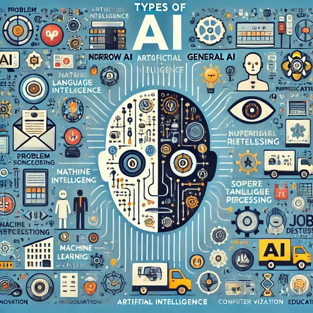

Why AI Is Not Just a Tool
How We Solved the Technical Challenges of the SkyGate Project?
The programming world is evolving at an unbelievable pace. Until a few years ago, the main concern of a developer was simply writing standard code, increasing page load speed, and designing visually appealing user interfaces. But today, a clear reality stands before all of us: tomorrow's websites and software without artificial intelligence (AI) will be incomplete and static products. Many still view artificial intelligence as a simple "chatbot" or a "coding assistant"; but from my perspective, AI is a complete paradigm shift in software engineering. From Reactive Systems to Predictive Software Traditional software acts like a calculator; if you give it input A, it will always produce output B (a component-driven and reactive process). But with the arrival of machine learning and intelligent algorithms, we have entered the era of "predictive and adaptive software": A system that understands the behavior and preferences of each user in real time. A website that optimizes its user interface based on the immediate needs of the audience. An application that detects and corrects unusual patterns before a bug or database error occurs. When I was developing my first chatbot with tools like XAMPP and DBeaver, this spark was ignited in my mind: software that cannot analyze context and user needs will soon become obsolete. The Main Challenge: Will AI Replace Developers or Give Them Wings to Fly? The question always arises: "Will AI replace programmers?" My answer is an absolute no; but programmers who know how to think with artificial intelligence will definitely replace programmers who remain stuck in the past. For me, working with artificial intelligence means: - Accelerated problem solving: Instead of spending hours on boilerplate code, focusing on business logic, security, and system architecture. - Boundless personalization: Building products that create a customized feel for each individual user. - Big data analysis: Transforming the abundance of raw data stored in databases into meaningful and actionable insights. My Next Steps on the Frontier of Artificial Intelligence Following the successful experiences we had with various projects in the Swiss and US competitions, I decided to dedicate my primary energy and focus to the intersection of "modern web development" and "machine learning-based systems." My next goal is to build models and solutions to compete in future AI competitions at the global level; systems that are not merely beautiful, but think, learn, and automatically solve real-world problems today. The future does not belong to those who are amazed by changes; it belongs to those who roll up their sleeves and build it today with their code and algorithms.